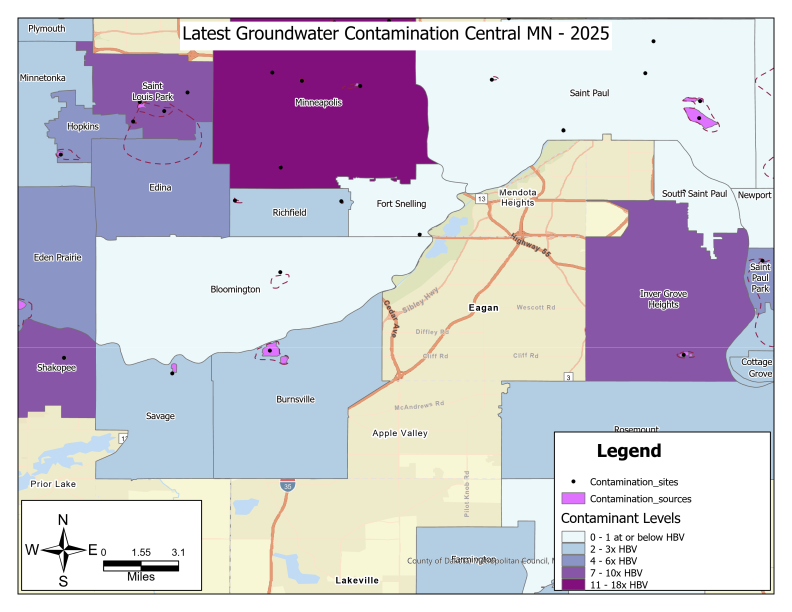

- Multiple Shapefile data sources access programmatically online and converted to points in Arcpy, then mapped with ArcGIS pro
- Shown below is a dashboard of these data for the latest sampling dates where contamination data is grouped by city/township
What is Arcpy?: Part 2¶
Reminder: Arcpy is a Python library for automating GIS tasks in Arc GIS Pro
- Collection of modules, functions, and classes from the ArcGIS toolbox
- It allows you to perform geoprocessing, analysis, data management and mapping automation using python
In [194]:
### Dashboard Created from these data
from IPython.display import IFrame # a module for controlling notebook outputs, allows you to embed images, video, webpages with the Iframe function
# ArcGIS Online URL for a dashboard showing groundwater contamination data
tool_url = "https://www.arcgis.com/apps/dashboards/e53b8dee993d458c858cb53a1ed56b99"
# Display the documentation inside Jupyter Notebook
IFrame(tool_url, width="100%", height="600px") # iframe can be used to display local or online webpages, documents, reports, visualizations , videos
Out[194]:
In [1]:
import arcpy # allows for access to ArcGIS pro geoprocessing tools and workflow automation
import os # enables interaction with local system resources (paths to folders and files)
import requests # access data from the web
import zipfile ## need this to process and extract downloaded zipfiles later on
import pandas as pd ## use to check spreadsheet formatting
What we did last time¶
- Went into details regarding setting up the arcpy environment, defining spatial reference and using geoprocessing tools
- We used arcrpy.XYTableToPoint() to convert multiple spreadsheets to point data.
- Although spreadsheet data is possible, it is more likely to have a shapefile
What we will do this time:¶
- walk through batch processing on multiple shapefiles retrieved from the web
- walk through converting an excel spreadsheet retrieved from the web
- All will be loaded into the same geodatabase
Accessing multiple online datasets and loading into ArcGIS Pro¶
- use-case: Taking in multiple new datasets and loading them into the same geodatabase for analysis in ArcGIS Pro #### Steps:
- Pull the online dataset using its url
- Handle dataset based on file size and type
- Check Coordinate Systems match
- Convert Excel to ArcGIS compatible table
- Check x,y (lat/lon) columns, re-format
- Convert tables to points
- Assign Coordinate System
- Project GCS to common PCS
Data Sources :¶
- Geography: MN
| Input Name | file types | Coordinate System | Source |
|---|---|---|---|
| MN PFAS levels | 1 excel file | GCS: NAD 83 | Report |
| MN Groundwater contamination atlas | 6 shape files | PCS: NAD 83 UTM Zone 15N | MetaData |
- One input dataset is different, we will reproject that one to the same PCS as the other to align them
Set up a workspace¶
arcpy.env.workspace¶
- Use-case: get or set the current workspace environment in which to perform arcpy operations
Breaking down the synax
- arcpy --> library
- env --> class that manages environment settings
- workspace --> attribute of the env class within the arcpy library
Note the general pattern: library.class.attribute
In [2]:
##===================== Define the path to script and project folder
# Gets folder where the script is located , use try/ except to handle different environments
try:
# works on normal python .py scripts
script_path = os.path.dirname(os.path.abspath(__file__))
("running a python script")
except NameError:
# works in a notebook environment
script_path= os.getcwd()
("running in a notebook")
print("Script is here", script_path)
# Get the folder inside the script folder
dir_path = os.path.join(script_path, "01 Data")
print("Directory path set to : ", dir_path)
# make sure the path exists on your operating system, if not create it
if not os.path.exists(dir_path):
os.makedirs(dir_path)
# set the folder path as the working environment, and store it for later use
try:
arcpy.env.workspace = dir_path
wksp = arcpy.env.workspace
except Exception as e:
print(f"Error setting up the path, {e}, Exception type: {type(e).__name__}") # python's built-in error messaging, {e} prints description and type(e).__name__ category
print("Working environment is here",wksp)
In [3]:
## We often end up re-running the workflow to tweak the output
## Modify the env attribute to allow overwriting output files
arcpy.env.overwriteOutput = True
Get online data with the Requests library¶
requests.get(url, params= None, **kwargs)¶
- Required argument : url (url to send the request to)
- params(optional, default is None), allows you to pass in query parameters that filter, modify or sort the data you're requesting
- response = response.get("https://some.example.com/data", params ={key:value})
- **kwargs: keyword arguments. A way to pass additional arguments to the request function as a dictionary
- can pass optional keyword arguments, headers, timeout
- Use-case: make customized requests to web pages, API or get files
- Example request with parameters:
- response = response.get("https://some.example.com/data", params={"State":"Minnesota"}, headers="User-Agent":"my-app")
In [190]:
## Quick example of using request: get weather data at a location with a format parameter
location= "Savage, MN" # pass in your location (city, state)
base_url= f"https://wttr.in/"
# Define query parameters
# params is a variable holding a dictionary that modifies the request
params = {"format":1, "u":""} # fyi, u:"" is a specific to the weather service API, it is a flag to include the u parameter without assing a specific value
# fetch the weather data with the query parameters
#url #params
response = requests.get(f"{base_url}/{location}", params=params)# make the get request with the constructed url
# print the final constructed url for your request
print("Final URL", response.url)
# Get the weather data as text
weather_data = response.text
#print(weather_data) # uncomment to see these
In [189]:
### 4 flavors for accessing the content: response.text, response.content and response.json
# returns the headers for the content
response_header = requests.head(f"{base_url}/{location}", params=params)# make the get request with the constructed url
if 'Content-Length' in response_header.headers:
print("Header content", response_header.headers['Content-Length']) # useful to determine the file size, which can be used to control how you process the files
else:
print("Content length header not found")
print("\n")
# returns text content, useful for webpages
#print("Webpage textual content", response.text)
# returns raw binary content, useful for non-text like images and files
#print("Webpage non-text raw data content", response.content)
print("\n")
# Parse the json data, use for handling json data from APIs
example_response = requests.get("https://jsonplaceholder.typicode.com/posts/1") # example url with json formatted data
json_data= example_response.json()
print("Json data content", json_data) # returns a dictionary
Extract and validate file types with Magic library¶
magic.from_file(filename, mime=True)¶
- Required arguments : filename (the path to the file)
- MIME Types are standardized identifiers used to indicate the nature and format of a file
- application/pdf for PDF or image/jpg for JPEG images
- Use-case: Identify and ensure the type of file before processing it
In [ ]:
### BE SURE TO INSTALL LIBRARY FIRST :
# step1 activate arcgispro-py3 environment: conda activate "C:\Program Files\ArcGIS\Pro\bin\Python\envs\arcgispro-py3"
# step2 install library: pip install python-magic-bin (on windows, for unix system use conda install -c conda-forge python-magic)
In [13]:
## Quick example of magic library for file type detection
import magic
# Path to the file to check file type
file_path = r"C:\Projects\my_git_pages_website\Py-and-Sky-Labs\content\images\earth-18384_256.gif"
# Get the MIME type of our file
mime_type = magic.from_file(file_path,mime=True)
print(f"The MIME type of the file is {mime_type}") # useful for validating file types and handling them according to file type
In [7]:
# quick reminder of where our current workspace is set
print("Data Folder is here" , wksp)
In [ ]:
# Using a folder to store data is ok.
# But geodatabase storage is more efficient way to store and manage multiple dataset in ArcGIS Pro
###========================= Define the output folder
file_folder = r"C:\Projects\my_git_pages_website\Py-and-Sky-Labs\content\ArcPY\02 Result"
if not arcpy.Exists(file_folder):
os.makedirs(file_folder)
###========================= Create the gdb in the output folder
gdb= os.path.join(file_folder, "MN_WaterContamination.gdb")
gdb_name = os.path.basename(gdb)
if not arcpy.Exists(gdb):
## TOOL: arcpy.management.CreateFileGDB(out_folder_path, out_name, {out_version})
arcpy.management.CreateFileGDB(file_folder,gdb_name )
###======================== Set up the working environment
arcpy.env.workspace = gdb
arcpy.env.overwriteOutput=True # doesn't hurt to do this again
In [17]:
# Getting online geospatial data, handling file size and file type
# As things getting more complicated. Good idea to jot down approach in plain english, sprinkle in methods or functions if it helps
## Workflow:
# Part 1- Define input and output folder paths: input_folder, output_folder--> download_file_path
# Part 2- optional, Get file size data from url: response = request.head(url)-->response.headers[Content-length]--> if 'Content-Length'
# Part 3- Access the raw data, open the file, write the content to file: response = request.Get(url)
# Part 4- Open output file and write the content to the disk: with open(download_file_path,"wb") as file: -->file.write(response.content)
# Part 5- Identify and validate the filetype: mime = magic.Magic(mime=True) --> file_type = mime.from_file(file_path)
# Part 6: Check if file is a zip, open, Extract zip file --> with zipfile.ZipFile(download_file_path "r") as zipf: zipf.extractall(ExtractFolder)
###=============================== Set up input and output folders, create gdb
# Define a path to store the incoming data
input_folder = r"C:\Projects\my_git_pages_website\Py-and-Sky-Labs\content\ArcPY\01 Data"
shapefile_folder = os.path.join(input_folder,"ShapeFile_Inputs")
file_path = os.path.join(shapefile_folder,"downloaded_file.zip") # we should know and define what data format are pulling from the web (.zip, .csv, .tif)
# Define path to output folder
output_folder = r"C:\Projects\my_git_pages_website\Py-and-Sky-Labs\content\ArcPY\02 Result"
if not os.path.exists(output_folder):
os.makedirs(output_folder)
# Set up geodatabase in output folder
gdb= os.path.join(output_folder, "MN_WaterContamination.gdb")
gdb_name = os.path.basename(gdb)
if not arcpy.Exists(gdb):
arcpy.management.CreateFileGDB(output_folder,gdb_name )
# if no folder, make a new folder
if not os.path.exists(shapefile_folder):
os.makedirs(shapefile_folder)
###=========================== Set up the working environment
arcpy.env.workspace = gdb
arcpy.env.overwriteOutput=True
###============================== Access online data through url, download the data, check its datatype, extract to a folder
# where is the data?, get the url
url= r"https://resources.gisdata.mn.gov/pub/gdrs/data/pub/us_mn_state_pca/env_mn_gw_contamination_atlas/shp_env_mn_gw_contamination_atlas.zip"
response = requests.head(url)
# check file size key from the response.headers and use the value to handle small and large file sizes
if 'Content-Length' in response.headers: # works because response.headers is a dictionary, keys are the header names i.e., Content-Length is a key
file_size= int(response.headers['Content-Length']) # get the value from the content-length key, value is a string of the size of the file in bytes
file_size_mb = file_size//(1024*1024) # convert bytes to megabytes
print(f"File size is about: {file_size} MB") # fyi , // is integer division, provides a rounded down whole number
# handle file size
if file_size_mb <200:
print("File is smaller than 200 MB, OK to load the entire file into memory and directly download the entire file")
response = requests.get(url)
with open(file_path, "wb") as file:
file.write(response.content)
else:
print("Large file, process and download in chunks")
response = requests.get(url, stream=True) # fetch content in a stream, dont load all at once into memory
with open(file_path, "wb") as file:
for chunk in response.iter_content(chunk_size=65536): # 64 KB chunks
if chunk:
file.write(chunk)
else:
print("Content length header not found")
print("\nContent download successful")
# detect file type
mime_type = magic.from_file(file_path, mime=True)
print("\n")
print("File type is: ", mime_type)
# set up a temporary folder to hold the extracted files
extractedZip_folder = os.path.join(shapefile_folder,"ExtractedZip")
if not os.path.exists(extractedZip_folder):
os.makedirs(extractedZip_folder)
# check if its a zipfile
if mime_type =="application/zip":
with zipfile.ZipFile(file_path, "r") as zip_f:
zip_f.extractall(extractedZip_folder)
print(f"Downloaded and extracted the file to {extractedZip_folder}")
else:
print("Not a zip file!, the file type is: ", mime_type)
In [ ]:
## Search the documentation for arcpy.conversion.FeatureClassToGeodatabase()
from IPython.display import IFrame # a module for controlling notebook outputs, allows you to embed images, video, webpages with the Iframe function
# ArcGIS Pro documentation URL for a specific tool
tool_url = "https://pro.arcgis.com/en/pro-app/latest/tool-reference/data-management/xy-table-to-point.htm"
# Display the documentation inside Jupyter Notebook
IFrame(tool_url, width="100%", height="600px") # iframe can be used to display local or online webpages, documents, reports, visualizations , videos
Out[ ]:
In [18]:
# Loop through the folder with extracted files and compile a list of all the shape file paths
shapefile_list = [] # start an empty list to hold .shp files
for f in os.listdir(extractedZip_folder):
if f.endswith(".shp"):
full_shp_path= os.path.join(extractedZip_folder,f) # get the full path for each file
shapefile_list.append(full_shp_path) # add to a list
###================================ Batch Convert shapefile to Feature classes in the Gdb
# check the list of shp files exists
if not shapefile_list:
print("no shape files found for extraction")
## Load the shapefiles into the gdb
try:
arcpy.conversion.FeatureClassToGeodatabase(shapefile_list,gdb)
print(f" Successfully Loaded shapefiles into into the {gdb}")
except Exception as e:
print("Error Loading Shapefiles into the GDB ", e, type(e).__name__)
except arcpy.ExecuteError:
arcpy.GetMessages(2)
In [13]:
## Check the gdb
arcpy.ListFeatureClasses()
Out[13]:
In [27]:
## Use the Describe Object to access properties of a Feature class like its Spatial Reference
## Get all the fc classes from the gdb
list_fc = arcpy.ListFeatureClasses()
for fc in list_fc:
desc= arcpy.Describe(fc)
sr = desc.SpatialReference
print(f"Feature class: , {fc}, Spatial Reference name :, {sr.name}, Spatial Ref Type : {sr.type}, Geometry{desc.shapetype}, WKID: {sr.factorycode}")
print("-"*150,"\n") # add line and space between prints
In [113]:
## Let's add-in some additional data related to PFAS levels to ensure our dataset has some overlap
import magic # import if not already done prior
###========================= Set up input and output data folders, define the new file name
input_folder = r"C:\Projects\my_git_pages_website\Py-and-Sky-Labs\content\ArcPY\01 Data"
file_path = os.path.join(input_folder,"MN_PFAS_Levels.xlsx")
output_folder = r"C:\Projects\my_git_pages_website\Py-and-Sky-Labs\content\ArcPY\02 Result"
gdb= os.path.join(output_folder,"MN_WaterContamination.gdb")
gdb_name= os.path.basename(gdb)
# check if gdb exists
if not arcpy.Exists(gdb):
arcpy.management.CreateFileGDB(output_folder,gdb_name)
print("Created a new gdb")
# define new feature class name
file_basename= os.path.basename(file_path)
file_name = os.path.splitext(file_basename)[0] # removes the extension
output_path = os.path.join(gdb,file_name)
###===================== Set the env
arcpy.env.workspace =gdb
arcpy.env.overwriteOutput=True
###========================= Get the data from a url that points to a spreadsheet
# where is the data?, get the url
url= r"https://www.pca.state.mn.us/sites/default/files/p-gen1-22i.xlsx"
response = requests.head(url)
if 'Content-Length' in response.headers:
file_size = int(response.headers['Content-Length'])
file_size_mb= file_size // (1024*1024)
print("File size is :", file_size_mb)
if file_size_mb <200:
response = requests.get(url)
with open(file_path, "wb") as f:
f.write(response.content)
else:
response= requests.get(url,stream=True)
with open(file_path, "wb") as f:
for chunk in response.iter_content(chunk_size=65536):
if chunk:
f.write(chunk)
else:
print("No content length found in url header")
file_type = magic.from_file(file_path, mime=True)
print("File type is", file_type)
In [150]:
file_path = r'C:\Projects\my_git_pages_website\Py-and-Sky-Labs\content\ArcPY\01 Data\MN_PFAS_Levels.xlsx'
# load in the data to determine the format and data layout
print(file_path)
excel_file = pd.ExcelFile(file_path)
for sheet in excel_file.sheet_names:
print(sheet)
In [151]:
## This spreadsheet is nicely organized. One sheet holds the Metadata and another one holds the Data
df_pf = pd.read_excel(file_path, sheet_name="Metadata")
df_pf.head(20)
Out[151]:
In [152]:
##======================== Reformat datatypes to match the expected format
df_pf = pd.read_excel(file_path, sheet_name="Data")
df_pf.info()
In [160]:
# We now know the x and y columns
# define x and y
ycoords= "Latitude"
xcoords="Longitude"
wkid= 4269 # define the spatial reference
sr= arcpy.SpatialReference(wkid)
###================================ Convert the Excel file to a table format that can be recognized by ArcGIS
file_path = r'C:\Projects\my_git_pages_website\Py-and-Sky-Labs\content\ArcPY\01 Data\MN_PFAS_Levels.xlsx'
pfas_table = os.path.join(gdb,"MN_PFAS_Table")
arcpy.conversion.ExcelToTable(file_path,pfas_table, Sheet="Data")
print("Successfully converted excel file to correct table format")
try:
arcpy.management.XYTableToPoint(pfas_table,output_path, xcoords, ycoords, coordinate_system=sr)
print(f"Successfully converted the {file_path} to points")
except Exception as e:
print("Error converting table to points", e, type(e).__name__)
except arcpy.ExecuteError:
arcpy.GetMessages(2)
In [161]:
arcpy.ListFeatureClasses()
Out[161]:
Define Spatial Reference¶
Evaluate Coordinate System described in MetaData¶
- This dataset does not clearly state the spatial reference for the Excel spreadsheet
- Hints for Correct CS
- Coordinate Data (lat, lon) in decimal degrees, not in meters or feet
- historic PFAS reports show datum being used is NAD 83
arcpy.SpatialReference()¶
- Use-case: changing or defining the CS for a new dataset
multiple ways you can specify a coordinate system
- use a projection file (.prj), name of coordinate system(e.g., GCS_WGS _1984), or WKID (e.g., 4326) also known as factory code
- WKID is less prone to error
- Link to look up coordinate systems : https://pro.arcgis.com/en/pro-app/arcpy/classes/pdf/geographic_coordinate_systems.pdf
Example:
- sr = arcpy.SpatialReference(4326)
- sr now holds the spatial reference that can be used when assigning a CS to a dataset
arcpy.management.DefineProjection(input_fc, arcpy.SpatialReference())¶
- Use-case: Assign a spatial reference to a dataset
In [174]:
##======================== Create a Spatial Reference object to define Coordinate Systems
# params
wkid= 4269 # GCS_North_American_1983
### TOOL: arcpy.SpatialReference(item, {vcs}, {text})
sr= arcpy.SpatialReference(wkid)
print("Point feature class spatial reference: ", sr.name, sr.factoryCode)
# Why?:
# Previous PFAS report shows datum is NAD 1983, and all projected CS in contamination atlas are NAD 83 UTM 15N
# We define the CS as GCS NAD 1983 and then project to NAD 83 UTM 15N to align with the contamination atlas data
input_fc = "MN_PFAS_Levels"
try:
arcpy.management.DefineProjection(input_fc, sr)
print("Successfully defined the coordinate system")
print(arcpy.GetAllMessages()) # prints all messages during tool execution
except Exception as e:
print("Error defining the CS", e, type(e).__name__)
except arcpy.ExecuteError:
print("Arcpy Tool Error", arcpy.GetMessages(2))
In [163]:
###====================== Check if Feature Classes were created and have the expected Characteristics
## Get all the fc classes from the gdb
list_fc = arcpy.ListFeatureClasses()
for fc in list_fc:
desc= arcpy.Describe(fc) # Use the Describe Object to access properties of a Feature class like its Spatial Reference
sr = desc.SpatialReference
print(f"Feature class: , {fc}, Spatial Reference name :, {sr.name}, Spatial Ref Type : {sr.type}, Geometry{desc.shapetype}, WKID: {sr.factorycode}")
print("-"*150,"\n") # add line and space between prints
Avoiding Repetitive coding¶
- Problem: some check or task is done twice or more, convert that task into a function
- Task: list out all the feature classes in the workspace, spatial reference, and geometry
- Instead of repeatedly writing or maintaining large amounts of code, just call that function
In [164]:
###====================== Check Feature Classes were created and have the expected Characteristics
# Instead of re-writing this we will wrap the operations into a function called def listFC_dataset_Attributes():
def listFC_dataset_Attributes(workspace=None): # accepts a workspace path parameter,By default uses the existing one if left as None
"""List feature classes in the workspace and their attributes"""
if workspace:
arcpy.env.workspace= workspace
if not arcpy.env.workspace:
print("No workspace is set! Please specify a workspace")
return # ensures we exit the function if not workspace is set
try:
## Get all the fc classes from the gdb
list_fc = arcpy.ListFeatureClasses()
wksp_path= arcpy.env.workspace
print(f"Workspace is set here {wksp_path}\n")
if not list_fc:
print("No feature classes found inthe workspace")
return # exit the function if not fc found
wkid_list = set()
CS_types = set()
fc_counter= 0
for fc in list_fc:
desc= arcpy.Describe(fc) ## Use the Describe Object to access properties of a Feature class like its Spatial Reference
sr = desc.SpatialReference
wkid_list.add(sr.factorycode)
CS_types.add(sr.type)
fc_counter+=1
print(f"Feature class: , {fc}, Spatial Reference name :, {sr.name}, Spatial Ref Type : {sr.type}, Geometry{desc.shapetype}, WKID: {sr.factorycode}")
print("-"*150,"\n") # add line and space between prints
print(f"\n{fc_counter} Feature classes found in the workspace path\n")
if len(wkid_list) >1:
print("Warning Different wkid detected among Feature Classes: " , wkid_list)
if len(CS_types) >1:
print("Warning Different Coordinate Systems types found among Feature Classes: ", CS_types)
except Exception as e:
print(f"Error occurred. Description: {e}, Error Category: {type(e).__name__}")
except arcpy.ExecuteError:
arcpy.GetMessages(2)
In [165]:
listFC_dataset_Attributes() # we already set our workspace. So we do not have to pass in a workspace
In [167]:
###==================== Project feature class with GCS to align with the projected coordinate system of the other datasets
# params
input_fc="MN_PFAS_Levels"
output_fc_proj= "MN_PFAS_Levels_proj"
wkid = 26915
out_cs= arcpy.SpatialReference(wkid) # NAD 83 UTM Zone 15N
print(f"Current workspace: {arcpy.env.workspace}")
arcpy.env.overwriteOutput = True
if arcpy.Exists(input_fc):
print("Feature Class found")
desc= arcpy.Describe(input_fc)
sr= desc.SpatialReference
print(f"Feature class CS name {sr.name}, and type {sr.factorycode}")
# ## TOOL: arcpy.management.Project(in_dataset, out_dataset, out_coor_system, {transform_method}, {in_coor_system}, {preserve_shape}, {max_deviation}, {vertical})
try:
arcpy.management.Project(input_fc, output_fc_proj, out_cs)
except Exception as e:
print("Error converting CS for the Feature Class", e, type(e).__name__)
except arcpy.ExecuteError:
print(arcpy.GetMessages(2))
In [168]:
listFC_dataset_Attributes()